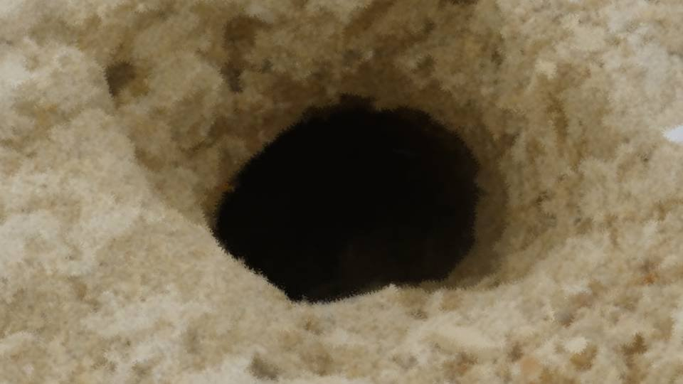

Script 00002127

「おい！ 来てみろ！ こっちだ！」
――茅萱ちゃん、見つかったのか！？
「いや違うけど、これ、何だ……？」
――茅萱ちゃん、見つかったのか！？
「いや違うけど、これ、何だ……？」

――なんだこのデカい穴……。まるで墓穴だな。
「ああ、今までこんなものなかったよな」
――確かにこんなの、今まで誰も気づかなかったなんてことはあり得ない。
「よし、入ってみる」
――大丈夫かよ……。
「ああ、今までこんなものなかったよな」
――確かにこんなの、今まで誰も気づかなかったなんてことはあり得ない。
「よし、入ってみる」
――大丈夫かよ……。
「くそ、ダメだな……。すぐそこでふさがっている」
――人は余裕で入れそうな大きさだな。 まさか、誰かの墓を掘ろうとしていたとか？
「誰がそんなことを……」
――よし、掘ってみるか？
「ああ。もしこんなところに茅萱ちゃんが埋められでもしていたら……」
――人は余裕で入れそうな大きさだな。 まさか、誰かの墓を掘ろうとしていたとか？
「誰がそんなことを……」
――よし、掘ってみるか？
「ああ。もしこんなところに茅萱ちゃんが埋められでもしていたら……」

「お前たち、何をしている？」
「ああ、大魔女様、実は――」
「ああ、大魔女様、実は――」
「見覚えのない穴？
確かに、こんなのは今まで……」
「だからもしここに茅萱ちゃんが埋められていたら……」
「しかしこんな大きな穴、誰にも見つからずに掘って茅萱を埋めるなんてこと……」
――確かに、こんなの掘ろうとしたら絶対に途中で見つかるよな……。
「だからもしここに茅萱ちゃんが埋められていたら……」
「しかしこんな大きな穴、誰にも見つからずに掘って茅萱を埋めるなんてこと……」
――確かに、こんなの掘ろうとしたら絶対に途中で見つかるよな……。
「お前たち、ここはもういいから別のところを探してほしい」
「分かりました」
「分かりました」

「これはまさか……。
伝承にあった、アバドンへ続くと言う――」